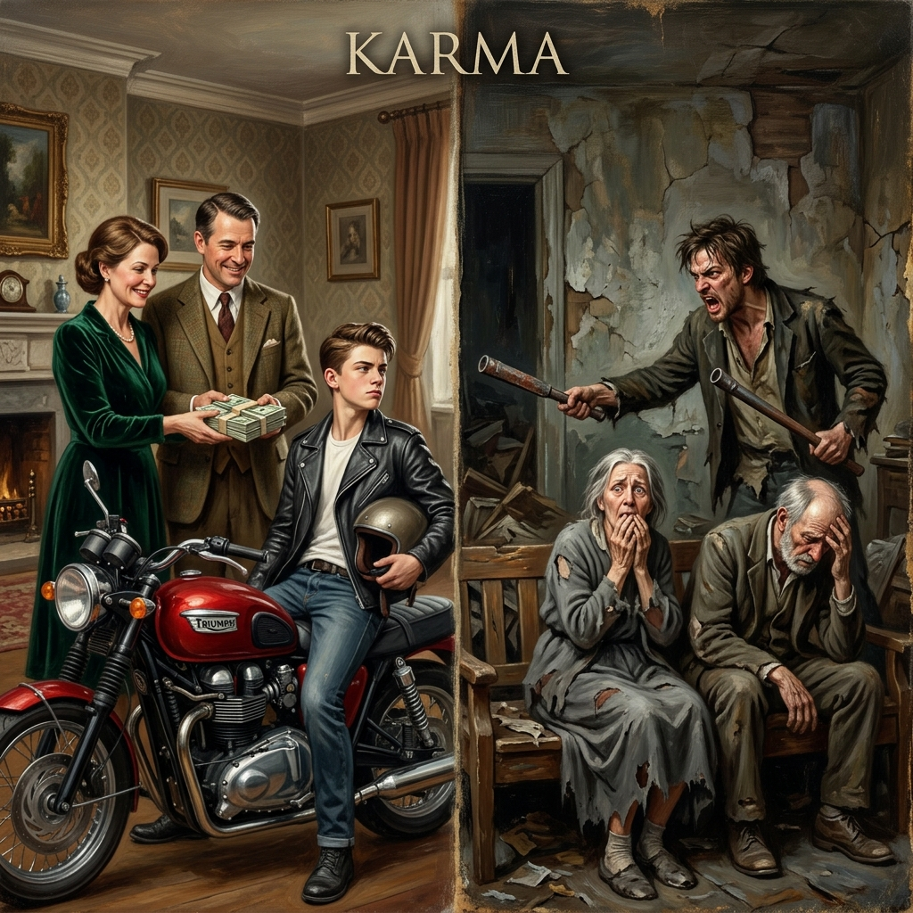
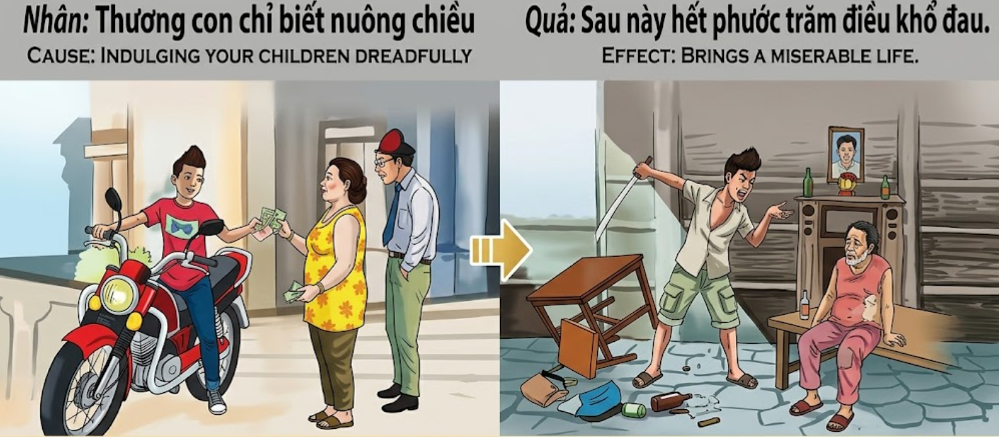

El Veneno del ConsentimientoThe Poison of IndulgenceIl Veleno dell'Indulgenza放纵的毒药سم التدليلЯд изнеженностиDas Gift der NachgiebigkeitLe poison de l'indulgence甘やかしの毒O Veneno do ConsentimentoĐộc Tố Của Sự Nuông Chiều
Amar a un hijo no significa concederle cada capricho; quien educa sin límites agota el mérito de su linaje y siembra las espinas de una vejez llena de amargura y desprecio.Loving a child does not mean granting every whim; he who educates without limits exhausts the merit of his lineage and sows the thorns of an old age full of bitterness and contempt.Amare un figlio non significa assecondare ogni suo capriccio; chi educa senza limiti esaurisce il merito della sua stirpe e semina le spine di una vecchiaia piena di amarezza e disprezzo.爱孩子并不意味着满足每一个奢望；没有底线的教育会耗尽家族的福报，并种下充满痛苦和轻蔑的晚年荆棘。حب الطفل لا يعني تلبية كل رغبة؛ من يربي بلا حدود يستنزف فضل نسبه ويزرع أشواك شيخوخة مليئة بالمرارة والازدراء.Любить ребенка — не значит потакать каждой прихоти; тот, кто воспитывает без границ, истощает заслуги своего рода и сеет шипы старости, полной горечи и презрения.Ein Kind zu lieben bedeutet nicht, jeden Wunsch zu erfüllen; wer ohne Grenzen erzieht, erschöpft das Verdienst seines Geschlechts und sät die Dornen eines Alters voller Bitterkeit und Verachtung.Aimer un enfant ne signifie pas céder à tous ses caprices ; celui qui éduque sans limites épuise le mérite de sa lignée et sème les épines d'une vieillesse pleine d'amertume et de mépris.子供を愛することは、すべてのわがままを許すことではありません。限界を設けずに教育する者は、家系の徳を使い果たし、苦しみと軽蔑に満ちた老後の棘をまくことになります。Amar um filho não significa conceder-lhe todos os caprichos; quem educa sem limites esgota o mérito da sua linhagem e semeia os espinhos de uma velhice cheia de amargura e desprezo.Thương con không có nghĩa là đáp ứng mọi yêu sách; kẻ nào nuôi dạy con mà không có giới hạn sẽ làm cạn kiệt phúc đức của dòng họ và tự gieo rắc những chông gai cho một tuổi già đầy cay đắng và sự khinh rẻ.
El amor paternal es una fuerza divina, pero cuando se despoja de la sabiduría, se convierte en un arma de doble filo. Muchos padres, movidos por un afecto ciego o por el deseo de compensar sus propias privaciones pasadas, confunden la guía con la servidumbre. Al otorgar bienes materiales y placeres sin exigir esfuerzo ni responsabilidad, están atrofiando la voluntad del alma que deben proteger.
En el telar del karma, el consentimiento excesivo actúa como un ácido que corroe las virtudes del joven. Un niño que nunca conoce el valor del trabajo ni el peso de las consecuencias se vuelve un ser engreído y tiránico. Sus padres creen que están comprando su felicidad, pero en realidad están financiando su caída. El mérito acumulado por generaciones puede evaporarse en una sola vida de derroche y falta de respeto.
El destino de estos padres es desgarrador. Al llegar el invierno de sus vidas, descubren que el hijo al que tanto dieron no siente gratitud, sino exigencia. La debilidad que cultivaron en él se vuelve contra ellos, a veces con violencia y siempre con indiferencia. La opulencia del pasado se transforma en una miseria presente, tanto económica como emocional, confirmando que el mayor daño que se puede hacer a un hijo es no enseñarle a gobernar sus propios deseos.
Parental love is a divine force, but when it is stripped of wisdom, it becomes a double-edged sword. Many parents, moved by blind affection or the desire to compensate for their own past deprivations, confuse guidance with servitude. By granting material goods and pleasures without demanding effort or responsibility, they are atrophying the will of the soul they must protect.
In the loom of karma, excessive indulgence acts like an acid that corrodes the virtues of the young. A child who never knows the value of work or the weight of consequences becomes a conceited and tyrannical being. His parents believe they are buying his happiness, but in reality, they are financing his downfall. The merit accumulated for generations can evaporate in a single lifetime of waste and lack of respect.
The fate of these parents is heartbreaking. When the winter of their lives arrives, they discover that the son they gave so much to feels no gratitude, but only demand. The weakness they cultivated in him turns against them, sometimes with violence and always with indifference. The opulence of the past is transformed into an economic and emotional present misery, confirming that the greatest harm that can be done to a child is not to teach him to govern his own desires.
L'amore genitoriale è una fuerza divina, ma quando è privo di saggezza, diventa una spada a doppio taglio. Molti genitori, mossi da un affetto cieco o dal desiderio di compensare le proprie privazioni passate, confondono la guía con la servitù. Concedendo beni materiali e piaceri senza esigere sforzo o responsabilità, atrofizzano la volontà dell'anima que dovrebbero proteggere.
Nel telaio del karma, l'indulgenza eccessiva agisce come un acido que corrode le virtù del giovane. Un bambino que non conosce mai il valore del lavoro né il peso delle conseguenze diventa un essere presuntuoso e tirannico. I suoi genitori credono di comprare la sua felicità, ma in realtà ne stanno finanziando la rovina. Il merito accumulato per generazioni può evaporare in una sola vita di sprechi e mancanza di rispetto.
Il destino di questi genitori è straziante. Quando arriva l'inverno della loro vita, scoprono que il figlio a cui hanno dato tanto non prova gratitudine, ma solo pretesa. La debolezza que hanno coltivato in lui si rivolta contro di loro, a volte con violenza e sempre con indifferenza. L'opulenza del passato si trasforma in una miseria presente, sia economica que emotiva, confermando que il danno più grande que si possa fare a un figlio è non insegnargli a governare i propri desideri.
父母之爱是一种神圣的力量，但当它被剥夺了智慧，它就变成了一把双刃剑。许多父母出于盲目的情感或补偿自己过去匮乏的愿望，将引导与奴役混为一谈。通过提供物质财富和享乐而不要求努力或责任，他们正在萎缩他们必须保护的灵魂的意志。
在业力的织机上，过度的放纵就像酸液一样腐蚀了年轻人的美德。一个从未体验过劳动价值或后果重量的孩子会变成一个自负和虐待的人。他的父母以为他们在购买他的幸福，但实际上，他们是在资助他的堕落。几代人积累的功德可能会在短短一生的浪费和不尊重中挥发掉。
这些父母的命运令人心碎。当他们生命的严冬到来时，他们发现他们付出了这么多的儿子没有感恩之心，只有索取。他们在儿子身上培养的弱点反过来对付他们，有时伴随着暴力，总是伴随着冷漠。过去的奢华转变为现在的经济和情感上的痛苦，证实了对孩子最大的伤害就是不教他控制自己的欲望。
حب الوالدين قوة إلهية، لكنه عندما يُجرد من الحكمة، يصبح سلاحاً ذا حدين. العديد من الآباء، بدافع من العاطفة العمياء أو الرغبة في تعويض حرمانهم السابق، يخلطون بين التوجيه والعبودية. من خلال منح السلع المادية والملذات دون المطالبة بالجهد أو المسؤولية، فإنهم يؤديون إلى ضمور إرادة الروح التي يجب عليهم حمايتها.
في نول الكارما، يعمل التدليل المفرط مثل حمض يآكل فضائل الشباب. الطفل الذي لا يعرف أبداً قيمة العمل أو وزن العواقب يصبح كائناً مغروراً وطاغياً. يعتقد والداه أنهما يشتريان سعادته، لكنهما في الحقيقة يمولان سقوطه. إن الفضل المتراكم لأجيال يمكن أن يتبخر في عمر واحد من الإسراف وعدم الاحترام.
مصير هؤلاء الآباء مفجع. عندما يصل شتاء حياتهم، يكتشفون أن الابن الذي أعطوه الكثير لا يشعر بالامتنان، بل بالمطالبة فقط. الضعف الذي زرعوه فيه ينقلب عليهم، أحياناً بالعنف ودائماً باللامبالاة. تتحول رفاهية الماضي إلى بؤس حالي، مادي وعاطفي، مما يؤكد أن أكبر ضرر يمكن إلحاقه بالطفل هو عدم تعليمه كيف يحكم رغباته الخاصة.
Родительская любовь — это божественная сила, но когда она лишена мудрости, она становится обоюдоострым мечом. Многие родители, движимые слепой привязанностью или желанием компенсировать свои прошлые лишения, путают руководство с раболепием. Предоставляя материальные блага и удовольствия, не требуя усилий или ответственности, они атрофируют волю души, которую должны оберегать.
На ткацком станке кармы чрезмерное потакание действует как кислота, разъедающая добродетели молодого человека. Ребенок, который никогда не знал цены труда или тяжести последствий, становится тщеславным и тираническим существом. Его родители верят, что покупают его счастье, но на самом деле они финансируют его падение. Заслуги, накопленные поколениями, могут испариться за одну жизнь, полную расточительства и неуважения.
Судьба таких родителей душераздирающа. Когда наступает зима их жизни, они обнаруживают, что сын, которому они так много дали, не чувствует благодарности, а только требует. Слабость, которую они взрастили в нем, оборачивается против них, иногда с насилием и всегда с безразличием. Роскошь прошлого превращается в экономическую и эмоциональную нищету настоящего, подтверждая, что величайший вред, который можно нанести ребенку, — это не научить его управлять собственными желаниями.
Elterliche Liebe ist eine göttliche Kraft, aber wenn sie der Weisheit beraubt wird, wird sie zu einem zweischneidigen Schwert. Viele Eltern, bewegt von blinder Zuneigung oder dem Wunsch, ihre eigenen früheren Entbehrungen zu kompensieren, verwechseln Führung mit Unterwürfigkeit. Indem sie materielle Güter und Vergnügungen gewähren, ohne Anstrengung oder Verantwortung zu verlangen, verkümmern sie den Willen der Seele, die sie schützen müssen.
Auf dem Webstuhl des Karmas wirkt übermäßige Nachgiebigkeit wie eine Säure, die die Tugenden der Jugend zerfrisst. Ein Kind, das nie den Wert von Arbeit oder das Gewicht von Konsequenzen erfährt, wird zu einem eingebildeten und tyrannischen Wesen. Seine Eltern glauben, sein Glück zu kaufen, aber in Wirklichkeit finanzieren sie seinen Untergang. Das über Generationen angesammelte Verdienst kann in einem einzigen Leben voller Verschwendung und Respektlosigkeit verdunsten.
Das Schicksal dieser Eltern ist herzzerreißend. Wenn der Winter ihres Lebens kommt, entdecken sie, dass der Sohn, dem sie so viel gegeben haben, keine Dankbarkeit empfindet, sondern nur Forderungen stellt. Die Schwäche, die sie in ihm kultiviert haben, wendet sich gegen sie, manchmal mit Gewalt und immer mit Gleichgültigkeit. Die Opulenz der Vergangenheit verwandelt sich in gegenwärtiges wirtschaftliches und emotionales Elend und bestätigt, dass der größte Schaden, den man einem Kind zufügen kann, darin besteht, es nicht zu lehren, seine eigenen Wünsche zu beherrschen.
L'amour parental est une force divine, mais lorsqu'il est dépouillé de sagesse, il devient une arme à double tranchant. De nombreux parents, mus par une affection aveugle ou par le désir de compenser leurs propres privations passées, confondent guidance et servitude. En accordant des biens matériels et des plaisirs sans exiger d'effort ni de responsabilité, ils atrophient la volonté de l'âme qu'ils doivent protéger.
Sur le métier à tisser du karma, l'indulgence excessive agit comme un acide qui corrode les vertus du jeune. Un enfant qui ne connaît jamais la valeur du travail ni le poids des conséquences devient un être présomptueux et tyrannique. Ses parents croient acheter son bonheur, mais en réalité, ils financent sa chute. Le mérite accumulé par des générations peut s'évaporer en une seule vie de gaspillage et de manque de respect.
Le sort de ces parents est déchirant. Lorsque vient l'hiver de leur vie, ils découvrent que le fils à qui ils ont tant donné ne ressent aucune gratitude, mais seulement de l'exigence. La faiblesse qu'ils ont cultivée en lui se retourne contre eux, parfois avec violence et toujours avec indifférence. L'opulence du passé se transforme en une misère présente, tant économique qu'émotionnelle, confirmant que le plus grand mal que l'on puisse faire à un enfant est de ne pas lui apprendre à gouverner ses propres désirs.
親の愛は神聖な力ですが、知恵が欠けると諸刃の剣となります。多くの親は、盲目的な愛情や過去の自らの欠乏を補いたいという願望から、導きと奉仕を混同してしまいます。努力や責任を求めることなく物質的な豊かさや快楽を与えることは、彼らが守るべき魂の意志を萎縮させているのです。
カルマの織機において、過度な甘やかしは若者の徳を腐食させる酸のように働きます。労働の価値も結果の重みも知らない子供は、うぬぼれが強く暴君のような存在になります。両親は幸せを買い与えているつもりですが、実際には破滅への資金を供与しているのです。何世代にもわたって蓄積された徳は、浪費と不敬のたった一度の人生で蒸発してしまいます。
これらの親の運命は痛ましいものです。人生の冬が訪れたとき、彼らはあれほど多くを与えた息子が感謝ではなく、さらなる要求しか抱いていないことを知ります。彼らが息子の中に育てた弱さは彼ら自身を襲い、時には暴力を伴い、常に無関心という形で現れます。過去の贅沢は現在、経済的・感情的な悲惨へと変貌し、子供への最大の害毒は、自らの欲望を制御する方法を教えないことであることを裏付けています。
O amor parental é uma fuerza divina, mas quando é despido de sabedoria, torna-se uma arma de dois gumes. Muitos pais, movidos por um afecto cego ou pelo desejo de compensar as suas próprias privações passadas, confundem a orientação con la servidão. Ao conceder bens materiais e prazeres sem exigir esforço nem responsabilidade, estão a atrofiar a vontade da alma que devem proteger.
No tear do karma, o consentimento excessivo actua como um ácido que corrói as virtudes do jovem. Uma criança que nunca conhece o valor do trabalho nem o peso das consequências torna-se um ser convencido e tirânico. Os seus pais acreditam que estão a comprar a sua felicidade, mas na realidade estão a financiar a sua queda. O mérito acumulado por gerações pode evaporar-se numa única vida de desperdício e falta de respeito.
O destino destes pais é dilacerante. Ao chegar o Inverno das suas vidas, descobrem que el filho a quem tanto deram não sente gratidão, mas exigência. La fraqueza que cultivaram nele volta-se contra eles, por vezes com violência e sempre con indiferença. A opulência do pasado transforma-se numa miséria presente, tanto económica como emocional, confirmando que o maior dano que se pode fazer a um filho é não lhe ensinar a governar os seus próprios desejos.
Tình thương cha mẹ là một nguồn sức mạnh thiêng liêng, nhưng khi thiếu đi trí tuệ, nó sẽ trở thành con dao hai lưỡi. Nhiều bậc cha mẹ, vì tình thương mù quáng hoặc mong muốn bù đắp cho những thiếu thốn của bản thân trong quá khứ, đã nhầm lẫn việc giáo dục với sự phục dịch. Việc cung cấp vật chất và hưởng thụ mà không đòi hỏi nỗ lực hay trách nhiệm sẽ làm thui chột ý chí và bản lĩnh của linh hồn mà họ có trách nhiệm bảo bọc.
Trên khung dệt của nhân quả, sự nuông chiều quá mức hoạt động như một loại axit ăn mòn mọi đức hạnh của người trẻ. Một đứa trẻ không bao giờ biết đến giá trị của sức lao động hay sức nặng của những hậu quả sẽ trở nên kiêu ngạo và bạo ngược. Cha mẹ chúng tưởng rằng mình đang mua hạnh phúc cho con, nhưng thực chất là đang tài trợ cho sự sa ngã của chính con mình. Phúc đức tích lũy qua nhiều thế hệ có thể tan biến chỉ trong một đời sống lãng phí và lăng nhục.
Số phận của những bậc cha mẹ này thật đau xé lòng. Khi mùa đông của cuộc đời ập đến, họ nhận ra đứa con mà mình đã hy sinh tất cả cho nó không hề có lòng biết ơn, mà chỉ đầy những yêu sách. Sự yếu hèn mà họ đã nuôi dưỡng trong con nay quay lại chống lại họ, đôi khi bằng bạo lực và luôn bằng sự thờ ơ lạnh lùng. Sự xa hoa trong quá khứ chuyển thành cảnh bần hàn và đau khổ trong hiện tại, xác nhận một sự thật rằng: tổn thương lớn nhất mà cha mẹ gây ra cho con chính là không dạy con cách quản trị chính ham muốn của mình.
La Flecha Torcida de Liang
The Crooked Arrow of Liang
La Freccia Storta di Liang
梁的歪箭
سهم ليانغ الملتوي
Кривая стрела Ляна
Der krumme Pfeil des Liang
La flèche tordue de Liang
リャンの曲がった矢
A Flecha Torta de Liang
Mũi Tên Cong Của Lương
En las tierras de Oriente, vivía un artesano llamado Liang que fabricaba los mejores arcos de la región. Prosperó y tuvo un hijo único, Kuno, a quien amó tanto que decidió que nunca pasaría hambre ni fatiga. Mientras Liang trabajaba bajo el sol, Kuno jugaba y pedía ropas de seda y banquetes. Liang, feliz de complacerle, nunca le impuso una tarea ni una corrección, creyendo que el amor era decir siempre 'sí'.
Kuno creció sin saber tensar un arco ni cultivar la tierra. Sus deseos se volvieron infinitos y su carácter, amargo. Empezó a juntarse con hombres de mala vida, gastando la fortuna de su padre en juegos y excesos. Cuando Liang envejeció y sus manos ya no pudieron trabajar, le pidió a Kuno que vendiera algunos granos para comprar medicinas. Kuno, enfurecido porque no había más dinero para sus vicios, destrozó el taller de su padre y le echó de casa, llamándole anciano inútil.
Liang terminó sus días mendigando en las calles del pueblo que una vez le admiró. Un sabio al verle le preguntó: '¿Cómo es que un maestro tan hábil terminó así?'. Liang, con lágrimas en los ojos, respondió: 'Fabriqué miles de flechas rectas, pero a la más importante, mi hijo, le permití crecer torcido. Ahora que él es un arco roto, yo soy el blanco de su veneno'. No fue el destino quien le arruinó, sino su propio consentimiento ciego.
In the Eastern lands, there lived a craftsman named Liang who made the best bows in the region. He prospered and had an only son, Kuno, whom he loved so much that he decided he would never go hungry or tired. While Liang worked under the sun, Kuno played and asked for silk clothes and banquets. Liang, happy to please him, never imposed a task or a correction on him, believing that love was always saying 'yes'.
Kuno grew up without knowing how to string a bow or till the land. His desires became infinite and his character bitter. He began to associate with men of bad life, spending his father's fortune on games and excesses. When Liang grew old and his hands could no longer work, he asked Kuno to sell some grains to buy medicines. Kuno, enraged because there was no more money for his vices, destroyed his father's workshop and threw him out of the house, calling him a useless old man.
Liang ended his days begging in the streets of the village that once admired him. A wise man seeing him asked: 'How is it that such a skillful master ended up like this?'. Liang, with tears in his eyes, replied: 'I made thousands of straight arrows, but for the most important one, my son, I allowed him to grow crooked. Now that he is a broken bow, I am the target of his poison'. It was not fate that ruined him, but his own blind indulgence.
Nelle terre d'Oriente viveva un artigiano di nome Liang que fabbricava i migliori archi della regione. Prosperò ed ebbe un unico figlio, Kuno, que amava così tanto da decidere que non avrebbe mai sofferto la fame né la fatica. Mentre Liang lavorava sotto il sole, Kuno giocava e chiedeva abiti di seta e banchetti. Liang, felice di accontentarlo, non gli impose mai un compito o una correzione, credendo que l'amore fosse sempre dire 'sì'.
Kuno crebbe senza saper tendere un arco né coltivare la terra. I suoi desideri divennero infiniti e il suo carattere amaro. Cominciò a frequentare uomini malavitosi, spendendo la fortuna del padre in giochi ed eccessi. Quando Liang invecchiò e le sue mani non poterono più lavorare, chiese a Kuno di vendere del grano per comprare dei medicinali. Kuno, infuriato perché non c'erano più soldi per i suoi vizi, distrusse l'officina del padre e lo cacciò di casa, chiamandolo vecchio inutile.
Liang finì i suoi giorni mendicando nelle strade del villaggio que un tempo lo ammirava. Un saggio vedendolo gli chiese: 'Com'è que un maestro così abile è finito in questo modo?'. Liang, con le lacrime agli occhi, rispose: 'Ho fabbricato migliaia di frecce dritte, ma alla più importante, mio figlio, ho permesso di crescere storta. Ora que lui è un arco rotto, io sono il bersaglio del suo veleno'. Non fu il destino a rovinarlo, ma la sua cieca indulgenza.
在东方的大地上，住着一位名叫梁的工匠，他制作出的弓是该地区最好的。他事业有成，育有一名独生子久诺。由于他非常疼爱这个儿子，由于他做出了一个决定：绝对不会让久诺受累。当梁顶着烈日干活时，久诺却在玩耍，并无止境地索要丝绸衣服和顶级宴席。梁总是开心地满足他，从未要求他做任何家务，也从未纠正过他的行为。梁认为：爱就是永远说“好的”。
久诺长大后既不会拉弓，也不会种地。他的欲望无穷无尽，性格也变得暴虐。他开始和市井恶徒混迹在一起，将父亲辛苦攒下的积蓄挥霍在豪赌和无节制的享乐上。当梁年老体衰，双手不再能工作时，他请求久诺让他变卖一些谷物来买药。久诺非常生气，因为钱不再够他挥霍在这些嗜好上了。他当即砸烂了父亲的作坊，并将年老的久诺赶出了家门，大骂他是一个没用的老头。
梁最后在那个曾敬重他的村庄里沿街乞讨。一位智者看到他并问到：“像您这样一位手艺高超的大师，为何落得如此境地？”梁含着泪回答道：“我造出了千万支笔直的箭，唯独对我生命中最重要的一支箭——我的儿子，我任由他长歪了。现在他是一把折断的弓，而我正是他毒箭的目标。”毁掉他的并非命运，而是他那盲目的纵容。
في الأراضي الشرقية، عاش حرفي يدعى ليانغ كان يصنع أفضل الأقواس في المنطقة. ازدهر حاله ورُزق بابن وحيد يدعى كونو، أحبه كثيراً لدرجة أنه قرر ألا يجعله يختبر الجوع أو التعب أبداً. بينما كان ليانغ يعمل تحت أشعة الشمس، كان كونو يلعب ويطلب ملابس حريرية ومآدب فاخرة. كان ليانغ سعيداً بإرضائه، ولم يفرض عليه مهمة أو تصحيحاً قط، معتقداً أن الحب يعني قول 'نعم' دائماً.
كبر كونو دون أن يعرف كيف يوتر قوساً أو يفلح الأرض. أصبحت رغباته بلا حدود وشخصيته مريرة. بدأ في معاشرة رجال السوء، منفقاً ثروة والده على القمار والمجون. عندما كبر ليانغ في السن ولم تعد يداه قادرتين على العمل، طلب من كونو بيع بعض الحبوب لشراء الدواء. استشاط كونو غضباً لأنه لم يعد هناك مال لنزواته، فحطم ورشة والده وطرده من المنزل، واصفاً إياه بالعجوز عديم الفائدة.
انتهى المطاف بليانغ متسولاً في شوارع القرية التي كانت تقدره يوماً ما. رآه حكيم وسأله: 'كيف انتهى الحال بمعلم ماهر مثلك هكذا؟'. أجاب ليانغ والدموع في عينيه: 'لقد صنعت آلاف السهام المستقيمة، لكن السهم الأهم، ابني، سمحت له أن ينمو معوجاً. الآن وقد صار قوساً مكسوراً، أنا الهدف لسمه'. لم يكن القدر هو من دمره، بل تدليله الأعمى.
В восточных землях жил мастер по имени Лян, который делал лучшие луки в округе. Он процветал, и у него родился единственный сын Куно, которого он так любил, что решил: тот никогда не узнает ни голода, ни усталости. Пока Лян трудился под палящим солнцем, Куно играл и требовал шелковых одежд и пиршеств. Лян, счастливый угодить ему, никогда не обременял его работой и не наказывал, веря, что любовь — это всегда говорить «да».
Куно вырос, не умея ни натянуть лук, ни возделать землю. Его желания стали бесконечными, а характер — желчным. Он начал водиться с дурными людьми, тратя состояние отца на азартные игры и излишества. Когда Лян состарился и его руки больше не могли работать, он попросил Куно продать немного зерна, чтобы купить лекарства. Куно, разозленный тем, что на его пороки не осталось денег, разгромил мастерскую отца и выгнал его из дома, назвав бесполезным стариком.
Лян закончил свои дни, попрошайничая на улицах деревни, которая когда-то восхищалась им. Мудрец, увидев его, спросил: «Как случилось, что такой искусный мастер закончил так?» Лян со слезами на глазах ответил: «Я сделал тысячи прямых стрел, но самой важной из них — моему сыну — я позволил вырасти кривым. Теперь, когда он превратился в сломанный лук, я стал мишенью для его яда». Не судьба разорила его, а его собственная слепая изнеженность.
In den östlichen Landen lebte ein Handwerker namens Liang, der die besten Bogen der Region fertigte. Er war wohlhabend und hatte einen einzigen Sohn, Kuno, den er so sehr liebte, dass er beschloss, ihn niemals Hunger oder Müdigkeit spüren zu lassen. Während Liang unter der brennenden Sonne arbeitete, spielte Kuno und verlangte nach Seidenkleidern und Banketten. Liang, glücklich, ihm jeden Gefallen zu tun, erlegte ihm nie eine Aufgabe oder eine Zurechtweisung auf, im Glauben, Liebe bedeute, immer 'Ja' zu sagen.
Kuno wuchs heran, ohne zu wissen, wie man einen Bogen spannt oder das Land bestellt. Seine Wünsche wurden endlos und sein Charakter bitter. Er begann sich mit schlechten Menschen einzulassen und gab das Vermögen seines Vaters für Glücksspiel und Ausschweifungen aus. Als Liang alt wurde und seine Hände nicht mehr arbeiten konnten, bat er Kuno, etwas Getreide zu verkaufen, um Medizin zu kaufen. Kuno, wütend, weil kein Geld mehr für seine Laster da war, zerstörte die Werkstatt seines Vaters und warf ihn aus dem Haus, wobei er ihn einen nutzlosen alten Mann nannte.
Liang endete als Bettler in den Straßen des Dorfes, das ihn einst bewundert hatte. Ein Weiser sah ihn und fragte: 'Wie kann es sein, dass ein so geschickter Meister so endet?' Liang antwortete mit Tränen in den Augen: 'Ich habe Tausende von geraden Pfeilen gefertigt, aber dem wichtigsten von ihnen, meinem Sohn, habe ich erlaubt, krumm zu wachsen. Jetzt, wo er ein zerbrochener Bogen ist, bin ich das Ziel seines Giftes.' Es war nicht das Schicksal, das ihn ruinierte, sondern seine eigene blinde Nachgiebigkeit.
Sur les terres d'Orient vivait un artisan nommé Liang qui fabriquait les meilleurs arcs de la région. Il prospéra et eut un fils unique, Kuno, qu'il aima tant qu'il décida qu'il ne connaîtrait jamais la faim ni la fatigue. Tandis que Liang travaillait sous le soleil, Kuno jouait et demandait des vêtements de soie et des banquets. Liang, heureux de lui complaire, ne lui imposa jamais de tâche ni de correction, croyant que l'amour consistait à toujours dire « oui ».
Kuno grandit sans savoir bander un arc ni cultiver la terre. Ses désirs devinrent infinis et son caractère amer. Il commença à fréquenter des hommes de mauvaise vie, dépensant la fortune de son père dans les jeux et les excès. Quand Liang vieillit et que ses mains ne purent plus travailler, il demanda à Kuno de vendre quelques grains pour acheter des médicaments. Kuno, furieux parce qu'il n'y avait plus d'argent pour ses vices, détruisit l'atelier de son père et le jeta à la rue, l'appelant vieil homme inutile.
Liang finit ses jours en mendiant dans les rues du village qui l'avait autrefois admiré. Un sage, le voyant, lui demanda : « Comment un maître aussi habile a-t-il pu finir ainsi ? ». Liang, les larmes aux yeux, répondit : « J'ai fabriqué des milliers de flèches droites, mais à la plus importante, mon fils, j'ai permis de grandir tordue. Maintenant qu'il est un arc brisé, je suis la cible de son venon ». Ce n'est pas le destin qui l'a ruiné, mais sa propre indulgence aveugle.
東の地に、その地域で最高の弓を作るリャンという職人が住んでいました。彼は繁栄し、一人息子のクノを授かりましたが、息子をあまりにも愛していたため、彼に空腹や疲労を一切経験させないと決めました。リャンが太陽の下で働いている間、クノは遊び、絹の服や宴会をせがみました。リャンは彼を喜ばせるのが幸せで、愛とは常に「イエス」と言うことだと信じ、仕事を課したり叱ったりすることはありませんでした。
クノは弓の弦を張ることも土地を耕すことも知らずに育ちました。彼の欲望は無限になり、性格はひねくれていきました。彼は素行の悪い男たちと付き合い始め、父親の財産を博打や放蕩に使い果たしました。リャンが年老い、手が動かなくなったとき、薬を買うために穀物を売ってほしいとクノに頼みました。クノは自分の悪癖に使う金がなくなったことに激怒し、父親の工房を壊して「役立たずの老人」と罵り、家から追い出しました。
リャンは、かつて彼を称賛した村の通りで物乞いをして生涯を終えました。ある賢者が彼を見て尋ねました。「これほど熟練した職人が、なぜこのような結末を迎えたのですか？」リャンは目に涙を浮かべて答えました。「私は何千ものまっすぐな矢を作りましたが、最も重要な矢である息子が曲がって育つのを許してしまいました。今や彼が折れた弓となったため、私は彼の毒の標的となっているのです」。彼を破滅させたのは運命ではなく、自分自身の盲目的な甘やかしでした。
Nas terras do Oriente, vivia um artesão chamado Liang que fabricava os melhores arcos da região. Prosperou e teve um filho único, Kuno, a quem amou tanto que decidiu que nunca passaria fome nem fadiga. Enquanto Liang trabalhava sob o sol, Kuno brincava e pedia roupas de seda e banquetes. Liang, feliz por lhe agradar, nunca lhe impôs uma tarefa nem uma correcção, acreditando que o amor era dizer sempre 'sim'.
Kuno cresceu sem saber tensar um arco nem cultivar a terra. Os seus desejos tornaram-se infinitos e o seu carácter amargo. Começou a juntar-se com homens de má vida, gastando a fortuna do seu pai em jogos e excessos. Quando Liang envelheceu e as suas mãos já não puderam trabalhar, pediu a Kuno que vendesse alguns grãos para comprar medicamentos. Kuno, enfurecido porque não havia mais dinero para os seus vícios, destroçou a oficina do seu pai e expulsou-o de casa, chamando-lhe velho inútil.
Liang terminou os seus dias mendigando nas ruas da aldeia que uma vez lhe admirou. Um sábio ao vê-lo perguntou-lhe: 'Como é que um mestre tão hábil terminou assim?'. Liang, com lágrimas nos olhos, respondeu: 'Fabriquei milhares de flechas rectas, mas à mais importante, o meu filho, permiti que crescesse torto. Agora que ele é um arco quebrado, eu sou o alvo do seu veneno'. Não foi o destino quem o arruinou, mas o seu propio consentimento cego.
Tại vùng đất phương Đông, có một nghệ nhân tên là Lương, người làm ra những cây cung tốt nhất vùng. Ông làm ăn phát đạt và có một người con trai duy nhất tên là Kuno. Vì quá yêu thương con, ông quyết định sẽ không bao giờ để Kuno phải chịu đói hay mệt nhọc. Trong khi Lương làm việc miệt mài dưới nắng gắt, Kuno chỉ lo chơi bời và đòi hỏi quần áo lụa là, tiệc tùng. Lương hạnh phúc khi chiều lòng con và không bao giờ giao việc hay sửa dạy, tin rằng tình yêu là luôn nói 'có'.
Kuno lớn lên mà không biết cách lên dây cung hay cày cấy. Những ham muốn của anh ta trở nên vô tận và tính cách thì trở nên độc địa. Anh ta bắt đầu đàn đúm với những kẻ xấu, ném tài sản của cha vào bài bạc và những trò trụy lạc. Khi Lương già yếu, đôi tay không còn làm việc được nữa, ông nhờ Kuno bán ít ngũ cốc để mua thuốc. Kuno nổi giận vì không còn tiền cho những thú vui tội lỗi của mình, đã đập phá xưởng của cha và đuổi ông ra khỏi nhà, mắng ông là lão già vô dụng.
Lương kết thúc cuộc đời mình bằng việc ăn xin trên chính những con phố của ngôi làng từng ngưỡng mộ ông. Một vị hiền triết nhìn thấy ông và hỏi: 'Tại sao một bậc thầy tài hoa như ông lại ra nông nỗi này?'. Lương rơi nước mắt trả lời: 'Tôi đã làm ra hàng ngàn mũi tên thẳng, nhưng với mũi tên quan trọng nhất đời mình là đứa con trai, tôi lại để nó mọc cong. Giờ đây nó là một cây cung gãy, và tôi chính là bia đỡ cho chất độc của nó'. Không phải định mệnh đã hủy hoại ông, mà chính là sự nuông chiều mù quáng của chính ông.

La Inspiración Original
The Original Inspiration
Nguồn cảm hứng ban đầu
L'ispirazione originale
最初的灵感
الإلهام الأصلي
Оригинальное вдохновение
Die ursprüngliche Inspiration
L'inspiration originale
オリジナルのインスピレーション
A ispirazione originale
La historia que hemos relatado en este capítulo está inspirada por el pasaje de la escena original de los murales «Tranh Nhân Quả» (Ilustraciones del Karma) del Templo Linh Ung en Da Nang, capturado en la imagen.
The story we have told in this chapter is inspired by the passage from the original scene of the “Tranh Nhân Quả” (Illustrations of Karma) murals of the Linh Ung Temple in Da Nang, captured in the image.
Câu chuyện chúng tôi kể trong chương này được lấy cảm hứng từ đoạn trích từ cảnh gốc của bức tranh tường “Tranh Nhân Quả” ở chùa Linh Ứng ở Đà Nẵng, được ghi lại trong hình ảnh.
La storia que abbiamo raccontato in questo capitolo è ispirata al passaggio della scena originale dei murali “Tranh Nhân Quả” (Ilustrazioni del Karma) del Tempio Linh Ung a Da Nang, catturati nell'immagine.
我们在本章中讲述的故事的灵感来自图像中捕获的岘港灵应寺“Tranh Nhân Quả”（业力插图）壁画的原始场景。
القصة التي رويناها في هذا الفصل مستوحاة من مقطع من المشهد الأصلي لجداريات 'ترانه نهan كو' (الرسوم التوضيحية للكارما) لمعبد لينه أونغ في دا نانغ، الملتقطة في الصورة.
История, которую мы рассказали в этой главе, вдохновлена отрывком из оригинальной сцены фрески «Тран Нхан Ку» («Иллюстрации кармы») храма Линь Унг в Дананге, запечатленной на изображении.
Die Geschichte, die wir in diesem Kapitel erzählt haben, ist inspiriert von der Passage aus der Originalszene der Wandgemälde „Tranh Nhân Quả“ (Illustrationen von Karma) des Linh Ung-Tempels in Da Nang, die im Bild festgehalten ist.
L'histoire que nous avons racontée dans ce chapitre est inspirée du passage de la scène originale des peintures murales « Tranh Nhân Quả » (Illustrations du Karma) du temple Linh Ung à Da Nang, capturées dans l'image.
この章で私たちが語った物語は、ダナンのリンウン寺院 de la pared “Tranh Nhân Quả” (業の図) の元のシーンの一節からインスピレーションを得て、画像に収められています。
A história que contamos neste capítulo é inspirada na passagem da cena original dos murais “Tranh Nhân Quả” (Ilustrações do Karma) do Templo Linh Ung em Da Nang, capturada na imagem.

Como se puede apreciar en el pasaje extraído del mural, la causa y su efecto kármico están descritos originalmente en vietnamita y con una breve traducción al inglés. A continuación, te ofrecemos su traducción detallada en los distintos idiomas:
As can be seen in the passage taken from the mural, the cause and its karmic effect are originally described in Vietnamese and with a brief translation into English. Below, we offer you its detailed translation in the different languages:
🇻🇳 Tiếng Việt:
Nhân: Thương con chỉ biết nuông chiều.
Quả: Sau này hết phước trăm điều khổ đau.
🇬🇧 English:
Cause: Indulging your children dreadfully.
Effect: Brings a miserable life.
Traducción Recreada:
Causa: Consentir a los hijos de forma excesiva.
Efecto: Trae una vida miserable.
Recreated Translation:
Cause: Indulging your children dreadfully.
Effect: Brings a miserable life.
Traduzione ricreata:
Causa: Assecondare i figli in modo eccessivo.
Effetto: Porta a una vita miserabile.
重新创建的翻译:
起因：极度放纵孩子。
结果：带来凄惨的生活。
الترجمة المعاد صياغتها:
السبب: إفساد الأبناء بالدلال المفرط.
الأثر: يؤدي إلى حياة بائسة.
Воссозданный перевод:
Причина: Чрезмерное потакание детям.
Следствие: Приводит к жалкой жизни.
Neu erstellte Übersetzung:
Ursache: Kinder übermäßig verwöhnen.
Wirkung: Führt zu einem erbärmlichen Leben.
Traduction recréée:
Cause : Gâter ses enfants de manière excessive.
Effet : Apporte une vie misérable.
再作成された翻訳:
原因：子供をひどく甘やかすこと。
影響：悲惨な人生をもたらす。
Tradução recriada:
Causa: Mimar os filhos de forma excessiva.
Efeito: Traz uma vida miserável.